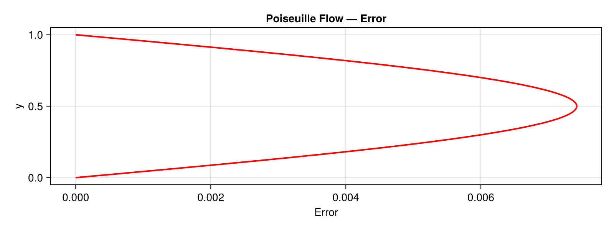
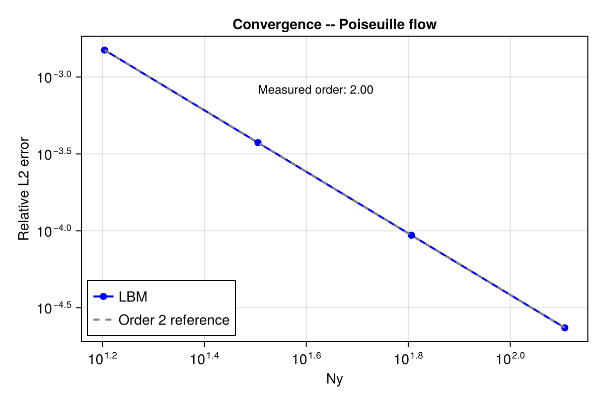
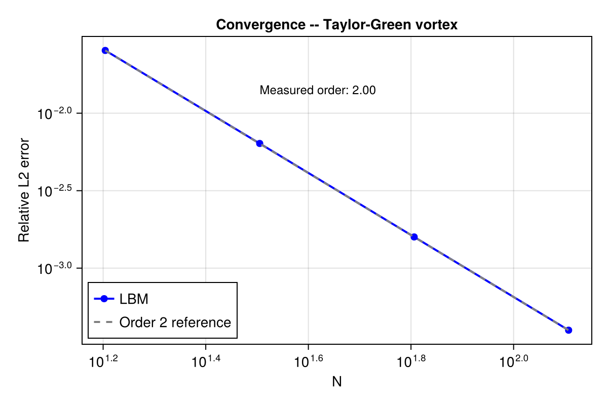

Accuracy: mesh convergence
The BGK lattice Boltzmann method is formally second-order accurate in space, $\mathcal{O}(\Delta x^2)$. We verify this on four canonical flows by measuring the error against known analytical or reference solutions at increasing resolution.
All runs use single-relaxation-time (BGK) collision on a D2Q9 lattice. Hardware: Apple M2 (CPU); see the Hardware page.
1. Poiseuille channel flow
Parabolic profile driven by a uniform body force $F_x$ between two no-slip walls (half-way bounce-back):
\[u_x(y) = \frac{F_x}{2\nu}\,y\,(H - y)\]
| $N_y$ | $L_2$ error | Order (local) |
|---|---|---|
| 16 | 1.5e-3 | — |
| 32 | 3.8e-4 | 2.0 |
| 64 | 9.5e-5 | 2.0 |
| 128 | 2.3e-5 | 2.0 |
Measured convergence order: 2.00 (least-squares fit over Ny = 16–128).


Reproduce
julia --project benchmarks/convergence_poiseuille.jl2. Taylor-Green vortex decay
Doubly periodic vortex with analytical decay $e^{-2\nu k^2 t}$, $k = 2\pi/N$:
\[u_x(x,y,t) = -u_0\,\cos(kx)\,\sin(ky)\,e^{-2\nu k^2 t}\]
| $N$ | $L_2$ error | Order (local) |
|---|---|---|
| 16 | 2.5e-2 | — |
| 32 | 6.3e-3 | 2.0 |
| 64 | 1.6e-3 | 2.0 |
| 128 | 4.0e-4 | 2.0 |
Measured convergence order: 2.00.


Reproduce
julia --project benchmarks/convergence_taylor_green.jl3. Thermal conduction (half-way bounce-back limit)
Steady 1D heat conduction between two isothermal walls using the double-distribution-function (DDF) thermal model.
The half-way bounce-back boundary introduces a geometric error of exactly half a lattice spacing, giving:
\[L_\infty = \frac{1}{2N}\]
This is an $\mathcal{O}(1/N)$ bound — first-order, not second — which is the expected behaviour for the half-way BB thermal condition. Higher-order thermal boundary schemes (e.g. anti-bounce-back) would recover second-order convergence but are not yet implemented.
| $N$ | $L_\infty$ (measured) | $1/(2N)$ (theory) |
|---|---|---|
| 16 | 3.13e-2 | 3.13e-2 |
| 32 | 1.56e-2 | 1.56e-2 |
| 64 | 7.81e-3 | 7.81e-3 |
| 128 | 3.91e-3 | 3.91e-3 |
The measured error matches the theoretical bound to machine precision, confirming a correct implementation.
Reproduce
julia --project benchmarks/convergence_thermal.jl4. Natural convection (Rayleigh-Bénard)
Nusselt number on a differentially heated square cavity at Rayleigh number $\text{Ra} = 10^3$, validated against the reference solution of De Vahl Davis (1983).
| $N$ | $\text{Nu}_{\text{Kraken}}$ | $\text{Nu}_{\text{ref}}$ | Relative error |
|---|---|---|---|
| 64 | 1.093 | 1.117 | 2.17 % |
The 2.17 % error at N = 64 is consistent with published LBM results at this resolution. Higher resolutions and Rayleigh numbers will be added in a future benchmark campaign.
Reproduce
julia --project benchmarks/convergence_cavity.jl